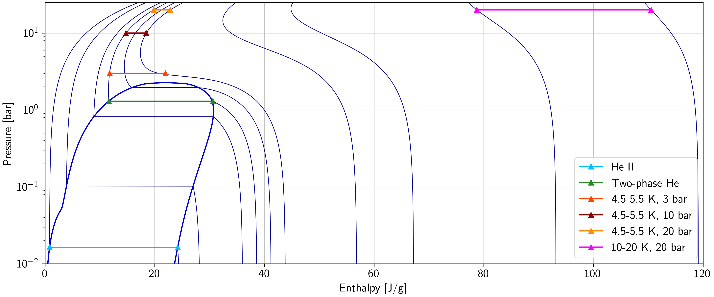
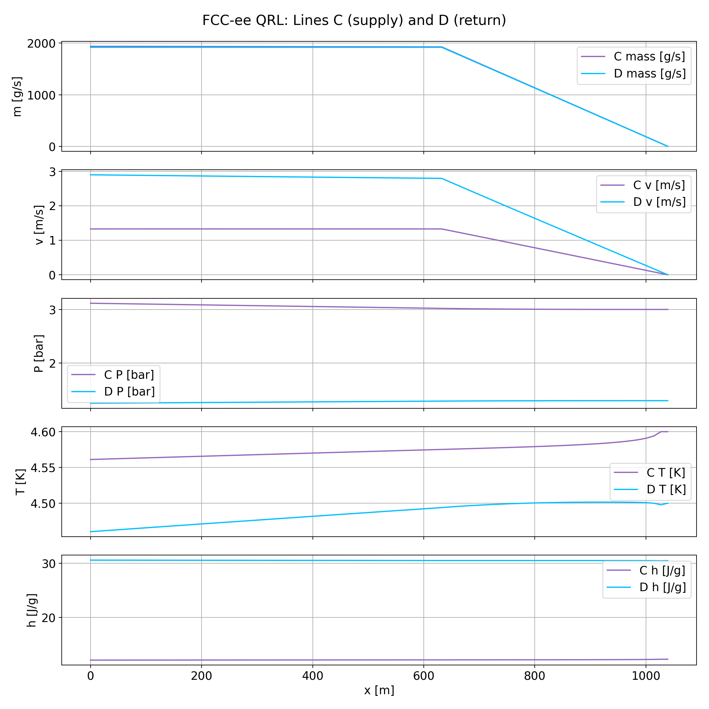

FCC-ee QRL Cryogenic Flow Model
As part of my work in the cryogenics group at CERN, I am developing a Python tool that models the helium mass flow and pressure distribution along the QRL (cryogenic transfer line) for the proposed FCC-ee accelerator. The goal of the model is to map out the mass flows, pressures, temperatures, and enthalpies along the line for a given set of initial conditions, providing inputs for the sizing and design of the future cryogenic distribution system.

The QRL feeds helium to the superconducting radiofrequency cryomodules sitting along the accelerator tunnel. There are two types of cryomodules — 400 MHz and 800 MHz — and they operate at different temperatures, so six separate helium lines run in parallel inside the QRL:
- Line A: 2 K helium supply to the 800 MHz cryomodules
- Line B: 2 K helium return from the 800 MHz cryomodules
- Line C: 4.5 K helium supply to the 400 MHz cryomodules
- Line D: 4.5 K helium return from the 400 MHz cryomodules
- Line E: Thermal shield supply (~45 K)
- Line F: Thermal shield return (~55 K)

- The code starts from the return module at the far end of the tunnel and steps node by node toward the machine interface
- At each node, the mass flow, pressure, temperature, and enthalpy are calculated for every line
- Heat inleaks from the pipe walls and the cryomodule load at each jumper connection are both accounted for
- Helium properties are evaluated with HEPAK, which handles the unusual behavior of helium near 2 K, including the superfluid regime
- Pressure drops are calculated from the pipe diameters, roughness, and local flow conditions
- The model prints key node tables for each line pair and generates property profile plots along the length of the line

The plots on this page show the modeled profiles for each line pair: mass flow, flow velocity, pressure, temperature, and enthalpy as functions of position along the transfer line. The mass flow in the return lines builds up as each cryomodule feeds into them, which drives the flow velocities and pressure gradients used to evaluate the pipe sizing. The model is set up so that cryomodule counts, spacings, heat loads, pipe diameters, and initial conditions can all be changed from a single input block, allowing different sections of the accelerator to be studied with the same code.